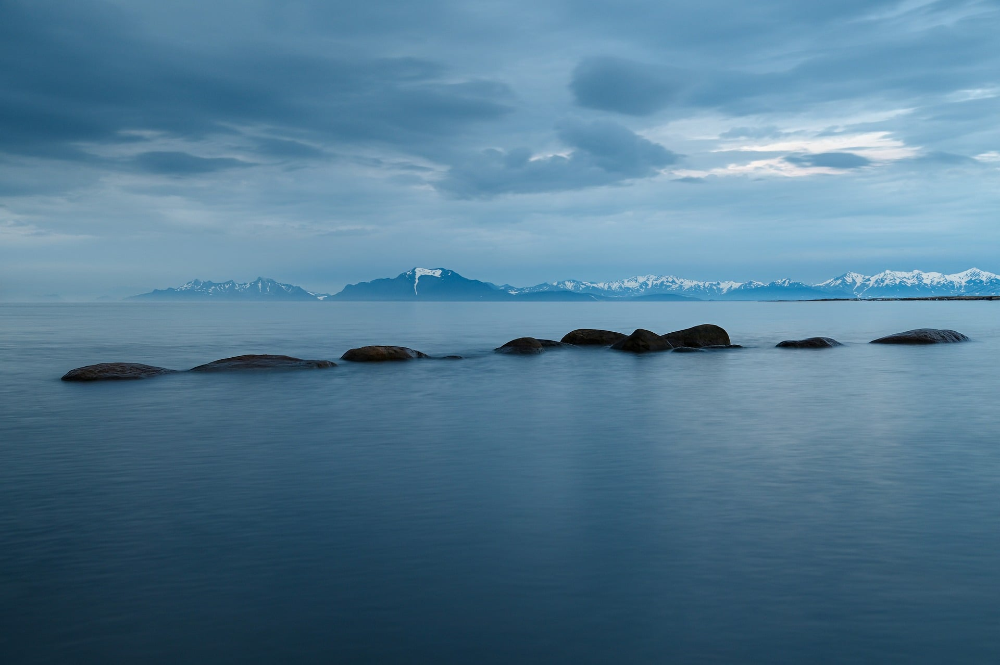

Informações
Dados gerais
| Tema | Elemento | Informação |
|---|---|---|
| Localização | País | Portugal |
| Continente | Europa | |
| Paisagem | Rio | Sado |
| Serra | Arrábida | |
| Município | Câmara Municipal de Setúbal | |
Cinco curiosidades
- O estuário do Sado é conhecido pela sua comunidade de golfinhos-roazes.
- O poeta Bocage nasceu em Setúbal e dá nome a uma praça da cidade.
- Luísa Todi, cantora lírica, também nasceu em Setúbal.
- O choco frito é um dos pratos mais conhecidos da gastronomia local.
- A cidade tem ligação ao mar, à pesca e à Serra da Arrábida.

